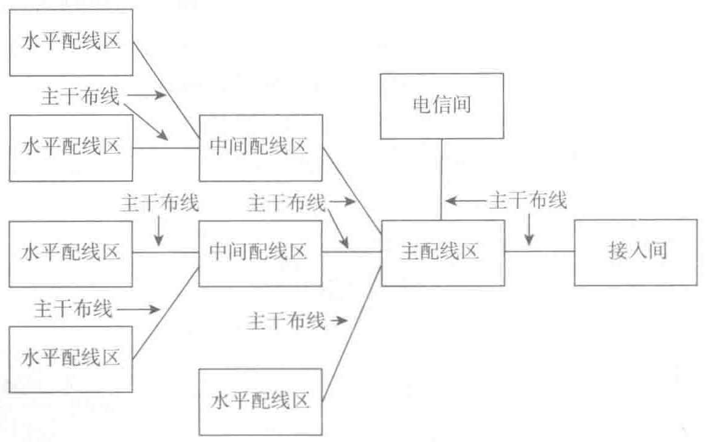

避免距离超长的问题。

（3）为了避免进线电路超过最大长度限制的要求，允许在水平交叉连接和次进线间之间设置互连布线路由。
主干缆线最长支持的传输距离与网络应用及采用何种传输介质有关，主干缆线和设备缆线、跳线的总长度应能满足相关的规定和传输性能的要求。为了缩短布线系统中缆线的传输距离，一般将主交叉连接设置在数据中心的中间位置。超出这些距离限制要求的布线系统可以增加中间配线区，或将其拆分成多个主机房分区，每个分区内的主干缆线长度都应能满足标准的要求。分区间的互联不属于本文定义范畴，可以参照广域网中布线系统缆线连接的应用情况。
表 7-3 为各类线缆针对不同网络应用的最大长度限制：
| 应 用 | 传 输 介 质 | 类 别 | 最 长 距 离 | 波 长 |
|---|---|---|---|---|
| 10GBASE-T | 双绞线 | 6 类或 E 级 UTP | 最长 37m | — |
| 10GBASE-T | 双绞线 | 6A 类或 EA 级 UTP | 100m | — |
| 10GBASE-T | 双绞线 | 6A 类或 EA 级 F/UTP | 100m | — |
| 10GBASE-T | 双绞线 | F 或 FA 级（屏蔽） | 100m | — |
| 10GBASE-CX4 | 同轴 | 无 | 10～15m | — |
| 10GBASE-SX | 62.5 多模 | 160/500MHz·km | 28m | 850nm |
| 10GBASE-SX | 62.5 多模 | 200/500MHz·km | 28m | 850nm |
| 10GBASE-SX | 50 多模 | 500/500MHz·km | 86m | 850nm |
| 10GBASE-SX | 50 多模 | 2000/500MHz·km | 300m | 850nm |